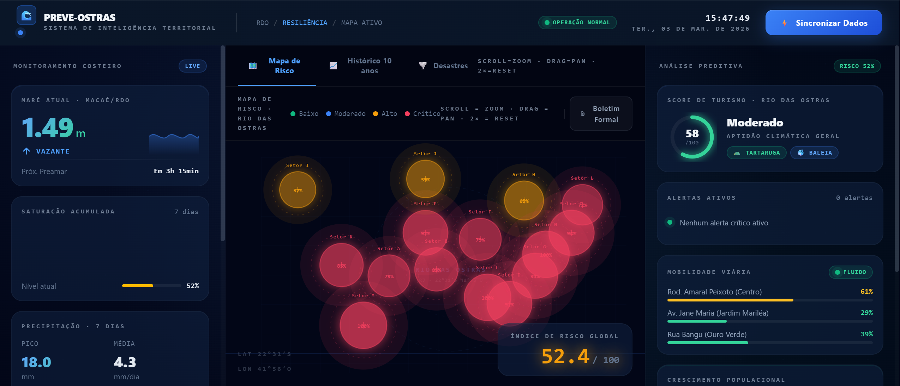
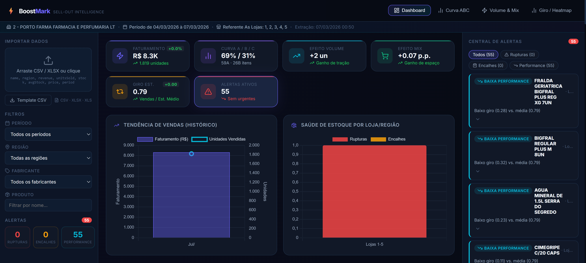
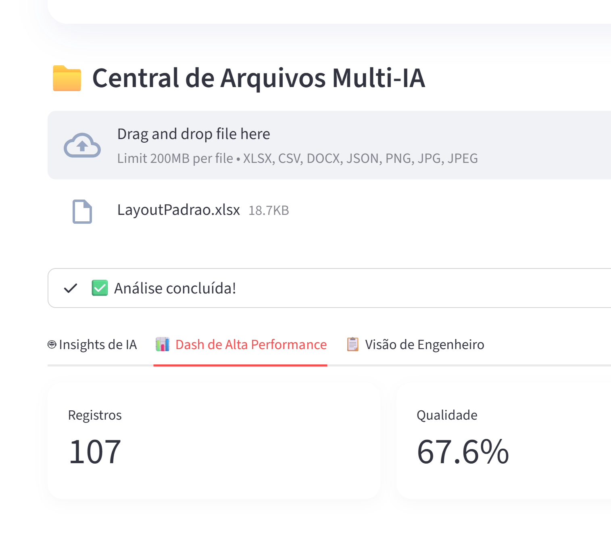
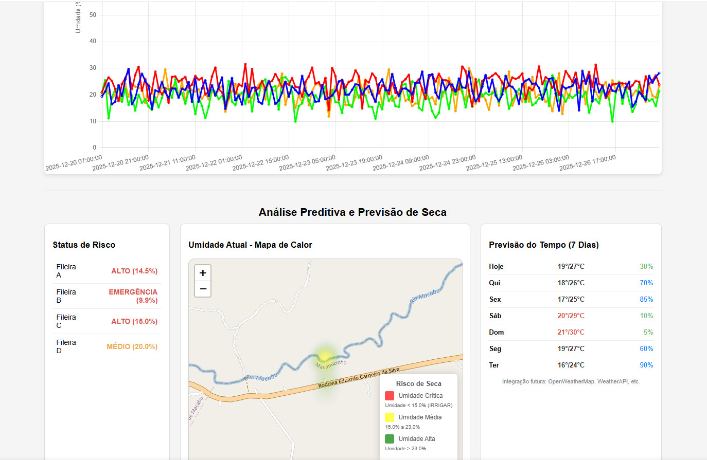
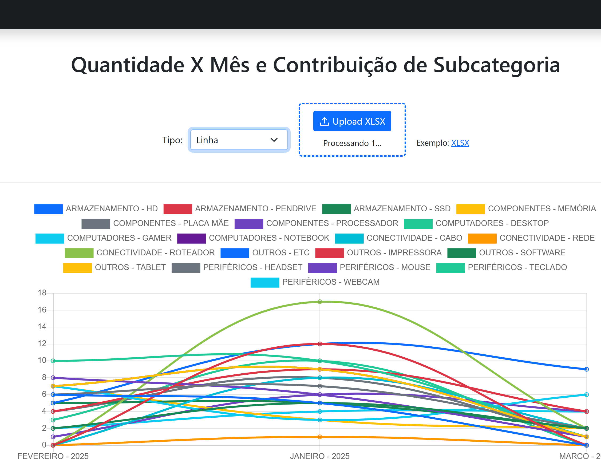

Infraestrutura.
Dados.
Código.
Sou um ativo que une hardening de cloud computing, modelagem preditiva e desenvolvimento Full Stack no mesmo ciclo de entrega. Como usuário de implante coclear, desenvolvi Deep Work nativo — que proporciona qualidade com foco e precisão técnica em ambientes de alta complexidade.
Eixos de Atuação
Projetos em Produção
Da análise territorial preditiva à gestão condominial premium — soluções completas, da infraestrutura ao deploy.

🌊 Preve-Ostras · Inteligência TerritorialResiliência urbana em tempo real: marés, chuvas e risco (D3.js + React 19).
Ver Repositório
⚡ BoostMark · Sell-Out IntelligenceDashboard comercial para varejo com Curva ABC e alertas de ruptura (React 19).
Ver Repositório
🤖 Analista IA PRO · Pipeline EDAPlataforma de análise exploratória com OCR e IA híbrida (Streamlit + Gemini).
Ver Repositório 🏙️ Sindi-Fácil · Gestão Condominial
🏙️ Sindi-Fácil · Gestão Condominial
Plataforma completa com RBAC e módulos financeiros (React 19 + Firebase).
Ver Repositório 📖 BibleDS · Hyper-Analytics
📖 BibleDS · Hyper-Analytics
Motor semântico AI-Driven sobre o corpus bíblico (Observable + Tailwind).
Ver Repositório ⛪ PNSC Digital · Gestão ParoquialEscalas automáticas e gamificação para servidores litúrgicos (Flutter + Firebase).

🌱 IrrigaSeca · MLOps & IoTAutomação de irrigação via modelos preditivos de umidade (ESP32 + Python).

📊 xlsx2chart · Pipeline ETLConsolidação de planilhas complexas em dashboards dinâmicos (Vanilla JS).
 📿 Santo Rosário · Devocional Digital
📿 Santo Rosário · Devocional Digital
Guia interativo de oração com sinalização visual e lógica litúrgica.
Stack & Ferramentas
Tecnologias que uso do diagnóstico ao deploy em produção.
Data Science & IA
Python · scikit-learn · Pandas · LlamaIndex · NLP · MLOps · Observable Framework · Streamlit
Full Stack
TypeScript · React 19 · Angular 21 · Vite · Tailwind CSS v4 · Zustand · D3.js · Lucide
Cloud & Infra
Firebase (Firestore · Auth · Hosting · Storage) · AWS · Docker · GitHub Actions (CI/CD)
Segurança & Governança
GNU/Linux · Hardening · GRC · Zabbix · Cacti · Disaster Recovery · RBAC
Vamos Conversar
Buscando desafios onde infraestrutura sólida, dados inteligentes e código que vai para produção se encontram. Disponível para projetos, consultoria e posições sênior.